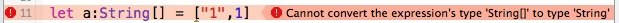
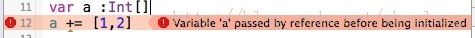
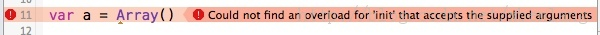

Swift 学习笔记
Table of Contents
1 变量与常量
1.1 let 用来定义一个常量 ： 初始赋值之后不能改变
1.2 var 用来定义一个变量 ： 初始赋值之后可以改变
1.3 变量的类型
变量的类型可以根据 其赋值 来隐式的指定 也可以在变量名 后面 增加 【colon + 类型】 ，显式的指定变量的类型
let implicitInteger = 70 let implicitDouble = 70.0 let explicitDouble : Double = 70
2 追加字符串
- 使用 加号 【+】
let label = "The width is " let width = 94 let widthLabel = label + String(width)
- 使用 斜线 括号 【\()】
“ backslash (\) before the parentheses. For example:” let apples = 3 let oranges = 5 let appleSummary = "I have \(apples) apples." let fruitSummary = "I have \(apples + oranges) pieces of fruit."
3 数组与字典
3.1 数组
3.1.1 初始化
- 对于单一类型的数组初始化
let a:String[] = ["1","n”] String[]表示字符串数组类型 Swift 支持隐式表达式，所以也可以不指定类型 let a = ["1", "n"]
- Swift 中也可以存储多种不同类型的值
let a:Array = ["1", 1, ["1", "n"]] 也可以隐式声明 let a = ["1", 1, ["1", "n"]]
@<font color="#ff0000"> 注意
同一个数组，最好只存一种类型的值，这样方便存取，也不容易出bug。 定义数组的时候最好使用显示定义。 显示定义时，如果书写错误，编译器可以直接报错 @</font> 
- 初始化空数组
var a = Int[]() // 括号表示一个函数调用吧
@<font color="#ff0000"> 注意 未初始化的数组不能使用 @</font> 
- Swift数组类型也提供初始化方法来创建确定长度和提供默认数值的数组。你可以通过这个初始化方法增加一个新的数组，元素的数量成为count，合适的默认值为repeatedValue
var threeDoubles = Double[](count: 3, repeatedValue: 0.0) // threeDoubles 的类型为 Double[], 以及等于 [0.0, 0.0, 0.0]
- 也可以使用Array初始化数组
var a =Array(count:2, repeatedValue:0) 但不能忽略count和repeatedValue

3.1.2 读取和修改
- let 定义的数组属于常量数组，不可改变 长度， 但可以改变每个位置的值
let a = [1, 2, 4, 5] a[0] = 9 a // a = [9, 2, 4, 5]
- var 定义的数组，可以改变长度，
- 使用append增加 元素
var a = [1, 2, 3, 5] a.append(6) a // a = [1, 2, 3, 5, 6]
- 使用+= 增加 元素
var a = [1, 2, 3, 5] a += 6 // 不能使用 a = a + 6 a // a = [1, 2, 3, 5, 6]
- 下标语法来修改数组的值
var a = [1, 2, 3, 4] a[0...1] = [7, 8] a // a == [7, 8, 3, 4] // let 定义的数组不能用这个方法修改数组的值
- 几个命令
var a = [1,2,3,4] a.insert(8, atIndex:0) a // a = [8, 1,2,3,4] let c = a.removeAtIndex(0) // c == 8 , a = [1,2,3,4] let d = a.removeLast() // d = 4, a = [1,2,3]
3.2 字典
let 定义的字典不能改变， var 定义的字典可以改变。 字典 是无序的 有一个方法： uddateValue(forKey:) 需要研究一下其返回值
4 Swift中的？和！
4.1 ？
Swift语言使用var定义变量，但和别的语言不同，Swift里不会自动给变量赋初始值，即变量没有默认值，所以在使用变量之前没有赋值就会出问题 如果希望声明变量时，希望这个变量有个初始值，那就需要把这个变量定义成 【Optional】
声明为Optional只需要在类型后面紧跟一个?即可。如:
var strValue: String? //?相当于下面这种写法的语法糖 var strValue: Optional<Int>
Optional其实是个enum，里面有None和Some两种类型。其实所谓的nil就是Optional.None, 非nil就是Optional.Some, 然后会通过Some(T)包装（wrap）原始值，这也是为什么在使用Optional的时候要拆包（从enum里取出来原始值）的原因, 也是PlayGround会把Optional值显示为类似{Some "hello world"}的原因，这里是enum Optional的定义：
enum Optional<T> : LogicValue, Reflectable { case None case Some(T) init() init(_ some: T) /// Allow use in a Boolean context. func getLogicValue() -> Bool /// Haskell's fmap, which was mis-named func map<U>(f: (T) -> U) -> U? func getMirror() -> Mirror }
文档中也有提到说，在使用Optional值的时候需要在具体的操作，比如调用方法、属性、下标索引等前面需要加上一个?，经喵神指正，”Optional Chaining的问号的意思是询问是否响应后面这个方法，和原来的isResponseToSelector有些类似”，如果是nil值，也就是Optional.None，固然不能响应后面的方法，所以就会跳过，如果有值，就是Optional.Some，可能就会拆包(unwrap)，然后对拆包后的值执行后面的操作，比如：
let hashValue = strValue?.hashValue
一旦声明为Optional的，如果不显式的赋值就会有个默认值nil。判断一个Optional的值是否有值，可以用if来判断：
if strValue { //do sth with strValue }
当我们需要使用这个Optional变量的值的时候，可以使用如下方法：
var strValue : String? let tempValue = strValue if tempValue { // 如果 tempValue的值不为nil，就执行这里 }else{ // 如果 tempValue的值为nil 就执行这里 } 上面几行语句可以简写成 var strValue ; String? if let tempValue = strValue { //使用tempValue }else { }
4.2 ！
我们可以在确定知道 一个Optional变量不为nil的时候，使用 ！ 来对Optional进行强行解包（unwrapp）来得到变量的哈希值。
var a : String? = "aa" a // {some "aa"} a!.hashvalue // 5,863,207 这个数字的含义暂时不理解
5 Swift隐藏键盘
self.view.endEditing(true)